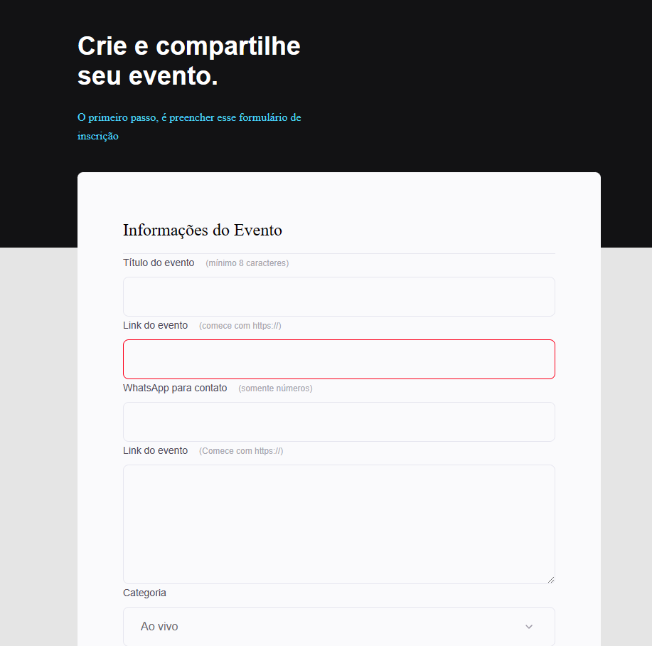

18 de Junho de 2023
Primeiro formulário

Esse é um projeto Web de um formulário para eventos empresariais, para aprimorar conceitos aprendidos no site passado e interagindo com novos comandos de input, forms, label, fieldset e option de html e css.